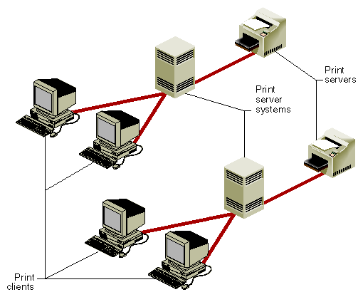

This section contains procedures for adding a printer, removing a printer, changing your default printer, clearing printer log files, and printing over a network.
To send print requests to your printer, you must first add your printer by registering it with the lp spooler. The procedures for adding a printer with lp vary. The procedures are divided into the following groups, depending on the type of printer and how it is used:
Note: The utilities described in this section, mkcentpr, mkserialpr, mkscsipr, and mknetpr, should be used whenever possible. For a list of supported printers, see the directory /var/spool/lp/model. Additionally, these utilities list the printers they support when they are executed.
Silicon Graphics systems are equipped with at least one parallel and one serial port. Both ports are on the back of the workstation and are clearly labeled.
The special file /dev/plp is the interface to the parallel printer port. Some larger servers have multiple parallel ports.
If you have more than one parallel port on your system, the device files that refer to the ports are named according to the board slot in which the CPU board is installed. For example, if you have an IO4 board in slot 2 and another in slot 4, the device files for the parallel ports are /dev/plp2 and /dev/plp4. One of these devices (the parallel port attached to the board designated as the primary board) is linked to the default /dev/plp.
Normally, /dev/plp is directly accessed only by a print spooling mechanism such as the lp subsystem. The special file /dev/plp may only be opened for writing one process at a time. However, several processes may open the device in read-only mode to find out the printer status. A printer reset is issued whenever the device file is opened for writing. For a complete description of the parallel printer interface, see the plp(7) reference page.
Parallel and serial printers are installed with a similar procedure but to different ports. Your printer hardware documentation should detail the cabling requirements for the printer's interface. Connect the printer interface cable to your printer and to the appropriate port on the back of your workstation.
To register printers connected directly to your computer via a parallel or serial port, follow these steps:
/usr/lib/lpshut
mkcentpr
The mkcentpr utility is an interactive script that prompts you for all necessary information about your printer and then automatically registers it. You should be prepared to specify the device file for the parallel port (/dev/plp unless you have multiple CPU boards installed) and other specific information. Consult the mkcentpr(1M) reference page for complete information about mkcentpr syntax.
mkserialpr
The mkserialpr command is similar to mkcentpr except that it is used for the serial port. Consult the mkserialpr(1M) reference page for complete information about mkserialpr syntax.
/usr/lib/lpadmin -dprinter-name
Your printer is now registered with the lp system and is ready for printing.
SCSI printers are supported by Impressario. If you have Impressario installed on a nongraphics system, use the mkscsipr command supplied with Impressario to register the printer. Consult the mkscsipr(1M) reference page for complete information about mkscsipr syntax.
Network print servers allow several users to use the same printer, thus avoiding the expense of having a printer attached to each workstation. In a network, printers attached to remote systems are called print servers, remote systems with print servers attached are called print server systems, and the workstations accessing the print servers are called print clients, as shown in Figure 2-3.

Figure 2-3 : Print Clients, Print Server Systems, and Print Servers
Print servers must be configured on the print server system before remote clients can configure them successfully across the network.
To configure a print server for use across a network, follow these steps:
addclient client_name
addclient grants permission for the specified client_name to access print servers across the network.
Note: The addclient command allows anyone who has access to the lp account on the print client to have the privileges of the lp account on the print server system. This means that your lp system can be modified by the client system users.
If you want all remote workstations to be able to use print servers on the print server system, type
addclient -a
mknetpr
mknetpr then prompts you for name of the queue, hostname, and printer name. You should be prepared to supply this information. Refer to mknetpr(1M) for more information.
/usr/lib/lpadmin -dprinter-name
Under some circumstances, you may want to remove one or more printers from the lp system. The rmprinter utility allows you to remove a specified printer. The preset utility allows you to reset your entire lp system to the way it was when you received your workstation from Silicon Graphics. To remove a specified printer, follow these steps:
rmprinter printer-name
Your printer is now removed from the lp system.
To remove all printers on your system, use the preset command.
Caution: Use preset with extreme care: it removes all printer configuration information.
preset
Your lp system is now completely reset and all printers are removed.
The default printer destination for a system can be an individual printer or a printer class. You can set it by using the lpadmin command with the -d option. The system default must be set by the user. A destination must already exist on the lp system before you can designate it as the default destination. See "Adding a Printer" for setting up a printer.
The lp command determines a request's destination by checking for a -d option on the command line, which, if present, takes precedence over any other established destination. If -d is not present, lp checks to see if the user's environment variable LPDEST is set. If LPDEST is set, it is used; if LPDEST is not set, then the request is routed to the default destination. Setting the environment variable LPDEST allows a user to have a default destination other than the system default.
Remote printing on the print server system allows users to send print jobs over the network with the same commands that send jobs to a local printer. After the print client's lp spooler queues the print request, it is sent across the network to the remote print server system, where it is processed by that system's lp spooler. As a result of this, you cannot accurately determine the status of a remote print request by using the lpstat command on the local system.
This section covers two aspects of remote printing:
When you send a print request across the network to a print server, the local lp system always reports that the request is being printed, regardless of its actual status in the print server system's lp spooler. To check the true status, you must remotely access (using rsh or rlogin) the print server system that is processing the job. The remote lp scheduler changes the request ID of any job sent to it over the network to reflect the actual name of the print server and gives it a new sequence number corresponding to its place in the print server queue. To determine a specific job's status, use the lpstat command. Example 2-9 uses rsh to access the print server system:
Example 2-9 : Checking the Print Server's lp Status
rsh hostnamelpstat -t
hostname is the name of the print server system.
Once you know the remote print server status, you can use the cancel command on the print server system to cancel jobs on the print server's queue. You must cancel a remote print job from the print server once it has been sent over the network by the local lp system.
Example 2-10 uses rsh to access the print server system:
Example 2-10 : Canceling Print Server Requests
rsh hostnamecancel print-server-name
rsh hostnamecancel request-ID
hostname is the name of the print server system. Using the print-server-name cancels the job currently being printed. Using the request-ID cancels the specified job whether or not it is currently being printed